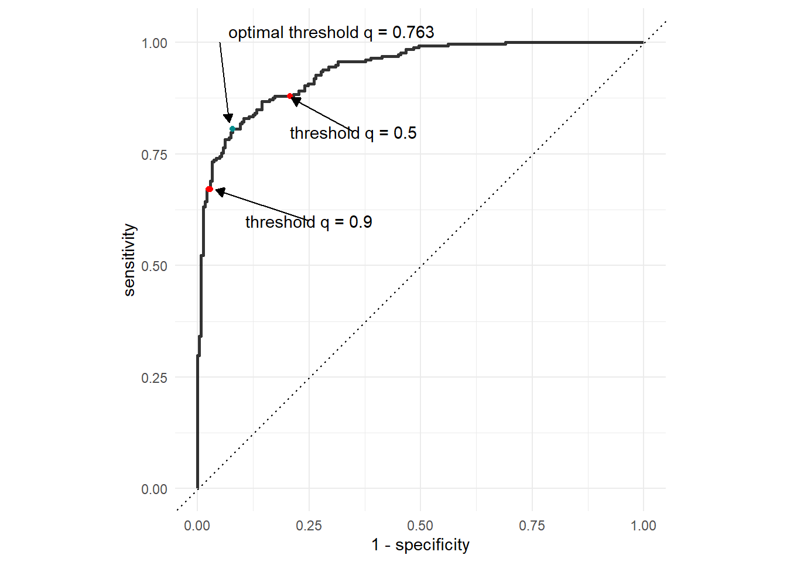
6 Klassifikation
Neben der Regression beschäftigen wir uns im Zuge des Supervised-Learnings auch mit der Klassifikation. Im Verlgeich zu Regressionsaufgaben ist die Zielvariable bei der Klassifikation nicht mehr metrisch, sondern nominal. Es gibt für die Zielvariablen also keine bestimmte Ordnung mehr und zusätzlich gehen wir auch davon aus, dass die Anzahl der Ausprägungen der Zielvariable endlich ist.
6.1 Einführung
In dieser Verasntaltung setzen wir uns vor allem mit der binären Klassifikation auseinander. Die Zielvariable \(Y\) nimmt also nur zwei Werte an. Normalerweise kodiert man diese Werte mit \(0\) und \(1\), so dass sich \(Y\) darstellen lässt als Vektor \(Y\in\{0,1\}^K\). Wir sind nun daran interessiert für einen Datenpunkt \(x\in\mathbb{R}^{J}\) die Wahrscheinlichkeit \[\begin{equation} \mathbb{P}(Y=1|X=x) \end{equation}\] zu schätzen. Falls die geschätzte Wahrscheinlichkeit \(\hat{p}\) größer als ein bestimmter, vordefinierter Schwellenwert \(q\in(0,1)\) ist, dann weisen wir das Sample der Klasse \(1\) zu. Intuitiv macht hierbei der Wert \(q=0.5\) Sinn, da wir uns bei einer Wahrscheinlichkeit \(p>0.5\) sicherer sind, dass der Datenpunkt zur Klasse \(1\) als zur Klasse \(0\) gehört.
6.2 Evaluation eines binären Klassifikationsmodells
Da eine Evaluation mithilfe von Metriken wie \(\text{RMSE}\) und \(R^2\) bei der binären Klassifikation wenig Sinn ergeben, wollen wir in diesem Abschnitt verschiedene alternativen Metriken betrachten.
6.2.1 Confusionmatrix
Als Grundlage für die Metriken welche wir im Folgenden betrachten wollen ist die sogenannte Confusion Matrix. Diese Kreuztabelle gibt an, wie viele Datenpunkte korrekt bzw. inkorrekt klassifiziert wurden. Hierbei wird insbesondere zwischen den Klassen Negativ und Positiv Unterschieden. Im vorherigen Abschnitt wurden die Klassen mit \(1\) und \(0\) enkodiert. Meistens steht \(1\) im Kontext der Confusion Matrix für Positive und \(0\) für Negative.

Die Felder der Confusion Matrix können wir am besten anhand eines Beispiels illustrieren.
Beispiel 6.1 Ein Forscherteam des Universitätsklinikums hat einen Test für das Feststellen einer seltenen Herzkrankheit entwickelt. Falls die Ärzte diese Herzkrankheit korrekt feststellen, kann diese durch einen operativen Eingriff geheilt werden. Die Wahrscheinlichkeit eines erfolgreichen Eingriffs ist hierbei größer als die Wahrscheinlichkeit, dass eine kranke Person den Krankheitsverlauf überlebt. Ein positives Testergebnis wird mit \(1\) bzw. Predicted Positive enkodiert und ein negatives Ergebnis mit \(0\) bzw. Predicted Negative. Nun gibt es folgende Möglichkeiten:
- Der Test ist Positiv und die untersuchte Person hat die Krankheit. Dann spricht man von True Positive.
- Der Test ist Positiv und die untersuchte Person hat die Krankheit nicht. Dann spricht man von False Positive.
- Der Test ist Negativ und die untersuchte Person hat die Krankheit nicht. Dann spricht man von True Negative.
- Der Test ist Negativ und die untersuchte Person hat die Krankheit. Dann spricht man von False Negative.
Neben einer korrekten Klassifikation (TP und TN) sollten wir uns besonders mit den beiden fehlerhaften Klassifikationsszenarien auseinandersetzen. In Example 6.1 ist eine fälschlicherweise als Negativ klassifizierte Person (FN) also ein Patient oder eine Patientin, welche die Herzkrankheit besizt, aber nicht diagnostiziert wird. Diese Art von Fehler ist im Beispiel besonders gravierend, da die Person eine höhere Überlebenswahrscheinlichkeit durch den operativen Eingriff besitzt. Falls eine Person fälschlicherweise als Positiv klassifiziert wird (FP), dann bedeutet das, dass der Test positiv ausfällt, obwohl die Person nicht an der Herzkrankheit erkrankt ist. Unter gewöhnlichen Umständen wäre eine solche Fehlklassifikation nicht ganz so gravierend, da die Person schließlich nicht an der seltenen Krankheit erkrankt ist. Falls allerdings auf Basis des Testergebnisses trotzdem ein operativer Eingriff vorgenommen wird, dann setzt man den Patient oder die Patientin einem unnötigen Risiko aus.
Wie gut also so ein Test tatsächlich funktioniert, sollte man also nicht nur an der absoluten oder relativen Anzahl der korrekt klassifizierten Datenpunkte festmachen, sondern auch daran, wie hoch die entsprechenden Fehlerquoten sind.
Präziser lässt sich diese Aussage mit folgenden Kennzahlen ausdrücken:
- Accuracy: \[\begin{equation*} \text{Accuracy} = \frac{TP+TN}{TP+TN+FP+FN} \end{equation*}\] Die Accuracy misst den relativen Anteil der korrekt klassifizierten Datenpunkte an der Gesamtanzahl der Datenpunkte. Sie beschreibt die Wahrscheinlichkeit für ein korrektes Testergebnis.
- Sensitivität: \[\begin{equation*} \text{Sensitivity} = \frac{TP}{TP+FN} \end{equation*}\] Die Sensitivität misst den relativen Anteil der als korrekterweise positiv klassifizierten Datenpunkte an der Gesamtanzahl der positiven Datenpunkte. Sie beschreibt die bedingte Wahrscheinlichkeit, dass ein positives Ergebnis vorhergesagt wird unter der Annahme, dass das Ergebnis tatsächlich positiv ist.
- Spezifizität: \[\begin{equation*} \text{Specificity} = \frac{TN}{TN+FP} \end{equation*}\] Die Spezifizität ist das Gegenstück zur Sensititivität. Sie misst den relativen Anteil der als korrekterweise negativ klassifizierten Datenpunkte an der Gesamtanzahl der negativen Datenpunkte. Spezifizität kann auch als die bedingte Wahrscheinlichkeit interpretiert werden, dass ein negatives Ergebnis vorhergesagt wird, unter der Annahme, dass das Ergebnis tatsächlich negativ ist.
- Präzision: \[\begin{equation*} \text{Precision} = \frac{TP}{TP+FP} \end{equation*}\] Die Präzision misst den relativen Anteil der korrekterweise als positiv klassifizierten Datenpunkte an der Gesamtzahl der als positiv klassifizierten Datenpunkte. Besonders bei unbalancierten Datensätzen1 ist die Präzision eine wichtige Metrik, da die Accuracy bei unbalacierten Datensätzen zu Trugschlüssen führen kann.
6.2.2 ROC-Kurve
In Section 6.1 haben wir kurz den Entscheidungsprozess bei einer Klassifikation in Abhängigkeit des Schwellenwerts \(q\) eingeführt. Da der Schwellenwert \(q\) allerdings stark die Confusion Matrix beeinflussen kann, sollte man sich verschiedene Schwellenwerte in Abhängigkeit ausgewählter Metriken betrachten. Eine dieser Gegenüberstellungen ist durch die sogenannte Receiver-Operator Characteristic Kurve gegeben. Diese zeigt auf der \(x\)-Achhse die False-Positive Rate (\(1-\text{specificity}\)) und auf der \(y\)-Achse die Sensitivität an. Der Kurve ergibt sich dann durch das Variieren des Schwellenwerts \(q\):
Die ROC-Kurve ist monoton steigend, d.h. je größer der Schwellenwert \(q\) ist, desto größer wird die False Positive Rate (\(1-\text{specificity}\)). Gleichzeitig steigt aber auch die Sensitivität, also der relative Anteil der als korrekterweise positiv klassifizierten Datenpunkte an der Gesamtanzahl der positiven Datenpunkte. Der optimale Threshold ist dann durch jenen Punkt gegeben, welcher am am nähsten zum Punkt \((1,0)\) ist. Ein Entscheidungsschwellenwert von \(0.5\) ist also nicht zwingende der optimale Schwellenwert für eine Entscheidung, wenn das Ziel ist gleichzeitig die Sensitivität zu maximieren und die False Positive Rate zu minimieren.
Die Winkelhalbierende beschreibt den Fall, dass die Sensitivität gleich der False Positive Rate ist. Falls diese beiden Metriken gleich sind, dann kann das unterliegende Modell nicht zwischen True Positives und False Positives unterscheiden. Dieser Fall wird dann auch gerne als Münzwurf beschrieben, da die Wahrscheinlichkeit für eine korrekte, bzw. falsche Klassifizierung \(50\%\) beträgt.
Die ROC-Kurve kann allerdings auch irreführend sein, weshalb man neben dieser Metrik auch noch andere Metriken betrachten sollte. Besonders, falls die Klassen unbalanciert sind kann die ROC-Kurve irreführend sein, da sie keine Informationen bezüglich der Präzision des Modells enthält.
Neben dem Ablesen der Sensitivität und False Positive Rate an der Kurve selbst können wir auch die Fläche unter der Kurve berechnen. Die sogenannte Area under the Receiver Operator Characteristic (AUROC) nimmt dabei Werte zwischen \(0\) und \(1\) an, wobei \(1\) einem perfekten Modell entspricht und \(0\) einem Modell, welches alle Vorhersagen falsch trifft.
6.3 Die Logistische Regression
Als Erweiterung der linearen Regression erlaubt es uns die logisitische Regression ebenso eine einfache Parametrisierung der geschätzten Wahrscheinlichkeit \(\hat{p}\). Betrachten wir zuerst den Fall, dass unser Datensatz aus lediglich einer unabhängigen Variable besteht. Im Falle der linearen Regression schätzen wir dann die Parameter \(b_0\) und \(b_1\) der Gleichung (vgl. Gleichung 2.1)
\[\begin{equation*} Y = b_0 + b_1 X + \varepsilon \end{equation*}\]
6.3.1 Modellgleichung
Wir können diese Modellgleichung dann mithilfe der logistischen Funktion \[\begin{equation*} \sigma(x) = \frac{1}{1+\exp(-x)} \in (0,1) , x\in\mathbb{R} \end{equation*}\] so transformieren, dass die Werte der Regressionsgleichung zwischen \(0\) und \(1\) liegen. Die Werte dieser transformierten Regressionsgleichung können dann als Wahrscheinlichkeiten interpretiert werden. Wir erhalten also nach dem Schätzen der Parameter die Modellgleichung
\[\begin{equation*} \widehat{\mathbb{P}(Y=1|X=x)} = \frac{1}{1+\exp\left(-(b_0+b_1x)\right)} \end{equation*}\]
Diese Schätzgleichung lässt sich dann analog zum MLR Modell erweitern zu
\[\begin{equation*} \widehat{\mathbb{P}(Y=1|X=x_k)} = \frac{1}{1+\exp\left(-(b_0+\sum_{j=1}^Jb_jx_{k,j})\right)} \end{equation*}\]
Die Parameter dieser Schätzgleichung werden mithilfe der Maximum Likelihood Methode durchgeführt, da eine analytische Lösung wie für die Parameter des MLR nur schwer zu berechnen ist.
Beispiel 6.2 Betrachten wir folgendes Beispiel:
Die Schätzgleichung einer einfachen linearen Regression sei durch \[\begin{equation*} y = \hat{b}_0+\hat{b}_1 x = 4x + 1 \end{equation*}\]
gegeben:
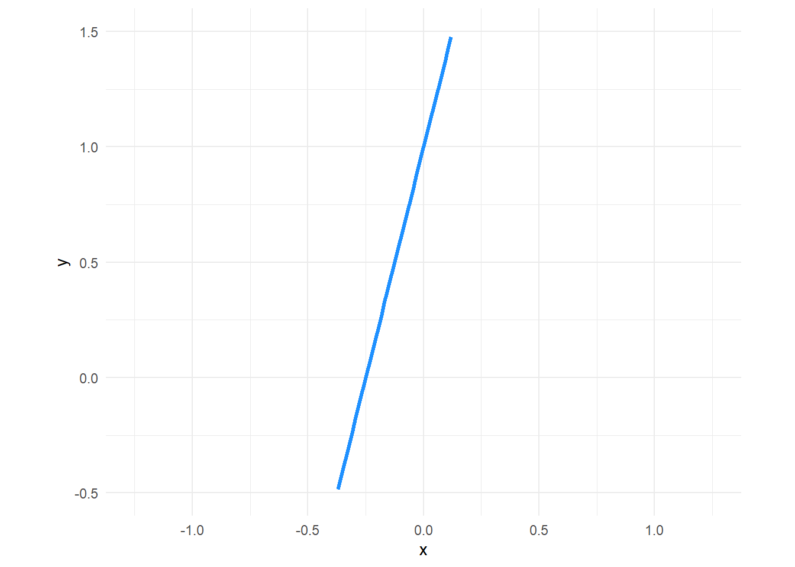
Dann eignet sich diese Funktion nicht, um eine Wahrscheinlichkeit vorherzusagen, da die Funktion für \(x < -0.25\) negative Werte annimmt und für \(x>0\) Werte annimmt, welche größer als \(1\) sind.
Durch eine Transformation dieser Schätzgleichung zu einer logistischen Schätzgleichung der Form
\[\begin{equation*} \widehat{\mathbb{P}(y=1|x)} = \frac{1}{1+\exp(-(\hat{b}_0 + \hat{b}_1 x))} =\frac{1}{1+\exp(-(4x + 1))} \end{equation*}\]
erreichen wir, dass die Funktionswerte nur noch im Intervall \((0,1)\) liegen:
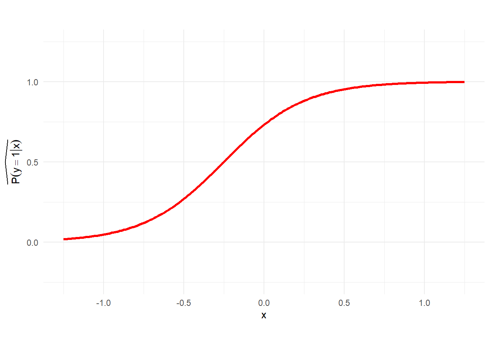
Je größer also die Werte für \(x\) sind, desto höher ist die Wahrscheinlichkeit, dass wir die Klassifikation \(y=1\) annehmen.
6.3.2 Interpretation der Koeffizienten
Im Vergleich zur multiplen Linearen Regression lassen sich die Koeffizienten des logistischen Modells nicht mehr direkt interpretieren. Auch die Überprüfung der Signifikanz einzelner Variablen ist nicht mehr mithilfe des \(t\) Test umsetzbar.
Grundlegend können wir allerdings folgende Aussagen treffen:f Das Vorzeichen eines geschätzeten Parameters gibt Auskunft darüber, ob die geschätzte Wahrscheinlichkeit beim Erhöhen der Variable (um eine Einheit) steigt oder sinkt.
- Falls \(b_j>0,\: j\in\{1,...,J\}\) so steigt die geschätzte Wahrscheinlichkeit \(\widehat{\mathbb{P}(Y=1|X)}\).
- Falls \(b_j<0,\: j\in\{1,...,J\}\), dann sinkt die geschätzte Wahrscheinlichkeit \(\widehat{\mathbb{P}(Y=1|X)}\).
Um den Einfluss einer Variable zu quantifizieren, betrachten wir die sogenannten Odds. Die Odds sind definiert als \[\begin{equation}\label{eq:odds} \mathrm{Odds} = \frac{\mathbb{P}(Y=1|X=x)}{\mathbb{P}(Y=0|X=x)} = \exp(b_0+\sum_{j=1}^Jb_jx_j) \end{equation}\] Die Odds können Werte im Intervall \((0,\infty)\) annehmen. Sie können interpretiert werden als die Chance dessen, dass ein Event eintritt (\(y=1\)) gegenüber dem nichteintreten des Events \((y=0)\).
Beispiel 6.3 Bei einem Wettanbieter für Fußballwetten sind für ein Spiel der Mannschaft \(A\) gegen Mannschaft \(B\) die dezimalen Odds (Quoten) für einen Sieg von Mannschaft \(A\) mit \(1.75\) und für einen Sieg von Mannschaft \(B\) mit \(2.10\) gegeben. Es wird angenommen, dass kein Unentschieden möglich ist. Die dezimalen Odds geben an, wie viel ein Spieler für einen eingesetzten Euro im Falle eines Gewinns zurückerhält (inklusive des Einsatzes). Die vom Wettanbieter implizierten Wahrscheinlichkeiten werden wie folgt berechnet:
Die implizierte Wahrscheinlichkeit für einen Sieg von \(A\) ist:
\[\begin{equation*} \mathbb{P}_{\text{impl}}(A) = \frac{1}{\text{Odds}(A)} = \frac{1}{1.75} \approx 0.5714 \end{equation*}\]
Die implizierte Wahrscheinlichkeit für einen Sieg von \(B\) ist:
\[\begin{equation*} \mathbb{P}_{\text{impl}}(B) = \frac{1}{\text{Odds}(B)} = \frac{1}{2.10} \approx 0.4762 \end{equation*}\]
Die Summe der implizierten Wahrscheinlichkeiten ist: \[\begin{equation*} \mathbb{P}_{\text{impl}}(A) + \mathbb{P}_{\text{impl}}(B) \approx 0.5714 + 0.4762 = 1.0476 \end{equation*}\] Diese Summe ist größer als 1, was die Wettmarge (Overround) des Anbieters widerspiegelt. Die tatsächlichen Wahrscheinlichkeiten, die der Wettanbieter zugrunde legt (nach Bereinigung der Marge), erhält man durch Normalisierung: \[\begin{equation*} \mathbb{P}(A) = \frac{\mathbb{P}_{\text{impl}}(A)}{\mathbb{P}_{\text{impl}}(A) + \mathbb{P}_{\text{impl}}(B)} = \frac{0.5714}{1.0476} \approx 0.5455 \end{equation*}\] \[\begin{equation*} \mathbb{P}(B) = \frac{\mathbb{P}_{\text{impl}}(B)}{\mathbb{P}_{\text{impl}}(A) + \mathbb{P}_{\text{impl}}(B)} = \frac{0.4762}{1.0476} \approx 0.4545 \end{equation*}\]
Somit rechnet der Wettanbieter mit einer Wahrscheinlichkeit von ca. \(54.55\%\), dass Mannschaft \(A\) gewinnt, und mit ca. \(45.45\%\), dass Mannschaft \(B\) gewinnt.
Falls \(\mathrm{Odds}=1\), dann sind beide Events gleich wahrscheinlich, während Odds \(>1\) bzw. \(<1\) implizieren, dass die Wahrscheinlichkeit für das Eintreten des untersuchten Events \(>50\%\) bzw. \(<50\%\) ist.
Der Einfluss der Modellparameter auf die Odds kann ebenso interpretiert werden:
- Steigt eine Variable \(X_j\) um eine Einheit, so erhöhen, bzw. sinken die Odds um \(\exp(b_j)\).
Falls zum Beispiel \(\exp(\hat{b}_j)=2\), so verdoppeln sich die Odds beim Erhöhen der Variable \(X_j\) um eine Einheit.
6.3.3 Statistische Signifikanz
Im Vergleich zur linearen Regression können bei der logistischen Regression den \(t\)-Test bzw. \(F\)-Test nicht auf ein geschätztes Modell anwenden.
Für die gschätzten Koeffizienten verwendet man den Wald-Test. Hierbei werden die Hypothesen \[\begin{equation*} H_0: b_j = 0\quad\text{vs.}\quad H_1:b_j\neq 0 \end{equation*}\] geprüft. Die Test Statistik ist durch \(W = \frac{\hat{b_j}}{\hat{\text{sd}}(\hat{b_j})}\) gegeben und zum Berechnen des \(p\)-Werts verwenden wir die Standardnormalverteilung.
Die statistische Signifikanz des Gesamtmodells können wir zum Beispiel mithilfe des Likelihood Ratio Tests evaluieren. Das Hypothesenpaar ist durch
\[\begin{equation*} H_0: b_j = 0\, \forall j=1,...,J\quad\text{vs.}\quad H_1:b_j\neq 0 \text{ für mind. ein } j. \end{equation*}\]
gegeben.
Die Teststatistik wird durch den Term
\[\begin{equation*} \nu = -LL_v \end{equation*}\]
wobei \(-LL_v\) die Log-Likelihood des Vollmodells ist, also
\[\begin{equation*} LL_v = \sum_{k=1}^{K}\hat{y}_k\log(\widehat{\mathbb{P}(Y=y_k|X=x_k)})+(1-\hat{y}_k)\log(1-\widehat{\mathbb{P}(Y=y_k|X=x_k)}) \end{equation*}\]
Unter der Annahme, dass \(\nu\sim \chi^2_{n-k}\) ist, kann dann der entsprechende \(p\)-Wert berechnet werden.
6.4 Klassifikationsbäume
In Chapter 4 haben wir uns bereits intensiv mit Regressionsbäumen auseinandergesetzt. Der Übergang von Regressions zu klassifikationsbäumen ist letztendlich auch nicht mehr komplex! An Stelle einer Reelwertigen Zielvariable betrachten wir in den Blattknoten nun geschätzte Klassen, bzw. Klassenwahrscheinlichkeitn. Der Algorithmus zum schätzen eines Klassifikationsbaums im Verlgeich zu Regressionsbäumen ist hierbei fast unverändert. Lediglich der Improvement Wert, welcher bei Regressionsbäumen mithilfe des \(\text{MSE}\) berechnet wird, muss durch eine passende Metrik im Klassifikationskontext ersetzt werden. Diese Metrik ist durch die Gini Impurity gegeben. Für einen Knoten \(K_n\) ist diese definiert als \[\begin{equation*} 1-(p_1^2+p_0^2) \end{equation*}\]
wobei \(p_1\) die relative Häufigkeit der Klasse \(1\) im Knoten ist und \(p_0\) die relative Häufigkeit der Klasse \(0\) im Knoten. Es wird dann getestet, für welches \(p_i,\: i=0,1\) das entfernen zu einem größeren Impurity Index führt. D.h., falls \(p_1\geq p_0\), dann wird der Knoten als Klassifikationswert Klasse \(1\) zurückgeben. Die Entscheidung bezüglich den Splittingvariablen funktioniert gleich: Teste, für welche Variable sich die größte Reduktion der Gini Impurity ergibt und verwende diese für einen weiteren Split.
Die Wichtigkeit der Variablen kann dann ebenso bezüglich dieses Impurity Wertes gemessen werden, so dass wir effektiv die gleiche Permutation Feature Importance Methode verwenden können.
6.5 Neuronale Netze
Ähnlich wie bei Klassifikationsbäumen müssen wir auch bei Neuronalen Netzen lediglich die Verlustfunktion anpassen, um nominale Zielvariablen zu berücksichtigen. Der Rückgabewert eines Neuronalen Netzes bei der binären Klassifikation ist dabei nicht das Klassenlabel selbst, sondern die geschätzte Wahrscheinlichkeit \(\widehat{\mathbb{P}(Y=1|X=x)}\). Die Verlustfunktion ist durch die sogenannte Binary Cross Entropy
\[\begin{equation*} L(y,\hat{y}) -\left(y\log(\hat{y})+(1-y)\log(1-\hat{y})\right) \end{equation*}\]
gegeben, wobei \(\hat{y} = \widehat{\mathbb{P}(Y=1|X=x)}\) und \(y\) das entsprechende Klassenlabel \(1\) oder \(0\) ist. Wichtig ist, dass die finale Aktiverungsfunktion den Output des Neuronalen Netzes also auf das Intervall \([0,1]\) skaliert, damit die Verlustfunktion auch berechnet werden kann (vgl. Aufgabe 5.1 Teilaufgabe 4)!
6.6 Klassifizierung in R
In diesem Abschnitt wollen wir die verschiedenen Klassifizierungsalgorithmen und deren Evaluation in R betrachten. Als Grundlage für diese Einführung dient der penguins Datensatz, welchen wir auch schon in vorherigen Übungen behandelt haben. Ziel wird es sein, die Variable Geschlecht vorherzusagen, da diese im Datensatz binär mit "male" und `“female
data_penguin <- palmerpenguins::penguins %>%
select(-year) %>%
na.omit() %>%
mutate(sex = factor(
if_else(sex=="male",1,0)
)
)Nachdem wir den Datensatz als data_penguin gespeichert haben, entfernen wir alle NA Werte und wandeln mithilfe der mutate() Funktion die Variable sex in eine Faktor Variable um. Die Ausprägungen setzen hierbei auf \(1\), falls ein Pinguin männlich ist und \(0\), falls ein Pinguin weiblich ist.
6.6.1 Logistische Regression
Ein logistisches Modell können wir mithilfe der logistic_reg() Funktion spezifizieren. Nach dem Spezifizieren können wir dann die Modellparameter einfach wieder mithilfe der fit() Funktion schätzen. Als Argumente übergeben wir der fit() Funktion die Daten selbst und die Formel, bezüglich welcher die Parameter geschätzt werden sollen. Da wir die Variable sex prognostizieren wollen, verwenden wir deshalb die Formel sex~..
log_spec <- logistic_reg()
log_fit <- log_spec %>%
fit(data = data_penguin,
formula = sex ~.)Nach dem Schätzen der Parameter können wir wieder mithilfe der extract_fit_engine() Funktion die Parameter extrahieren und die Modellzusammenfassung durch die summary() Funktion erzeugen.
log_fit %>% extract_fit_engine() %>%
summary()
Call:
stats::glm(formula = sex ~ ., family = stats::binomial, data = data)
Deviance Residuals:
Min 1Q Median 3Q Max
-3.4128 -0.2000 0.0022 0.1441 2.8235
Coefficients:
Estimate Std. Error z value Pr(>|z|)
(Intercept) -80.376672 12.329735 -6.519 7.08e-11 ***
speciesChinstrap -7.402697 1.662534 -4.453 8.48e-06 ***
speciesGentoo -8.427611 2.597027 -3.245 0.00117 **
islandDream 0.324158 0.809135 0.401 0.68870
islandTorgersen -0.507858 0.855746 -0.593 0.55287
bill_length_mm 0.614436 0.131968 4.656 3.22e-06 ***
bill_depth_mm 1.646446 0.335798 4.903 9.43e-07 ***
flipper_length_mm 0.026654 0.048307 0.552 0.58111
body_mass_g 0.005819 0.001087 5.352 8.71e-08 ***
---
Signif. codes: 0 '***' 0.001 '**' 0.01 '*' 0.05 '.' 0.1 ' ' 1
(Dispersion parameter for binomial family taken to be 1)
Null deviance: 461.61 on 332 degrees of freedom
Residual deviance: 126.05 on 324 degrees of freedom
AIC: 144.05
Number of Fisher Scoring iterations: 7Die Variable island scheintnicht statistisch signifikant zum Niveau \(\alpha = 0.1\) zu sein, was auch den Erwartungen entspricht, da auf jeder Insel sowohl männliche als auch weibliche Pinguine leben. Allerdings stellt sich dann natürlich wieder die Frage, warum die Variable species statistisch signifikant ist! Eine mögliche Ursache wäre Multikollinearität, wobei wir das an dieser Stelle nicht weiter untersuchen wollen. Außerdem ist die Variable flipper_length_mm nicht statistisch signifikant zum Niveau \(\alpha = 0.1\). Ein Grund hierfür könnte sein, dass die durchschnittliche Länge der Flossen bei männlichen und weiblichen Pinguinen gleichgroß ist.
Um das Modell zu evaluieren, sollten wir zunächst eine Confusion Matrix erzeugen. Dafür müssen wir zunächst Vorhersagen generieren. Wir dafür die augment() Funktion direkt auf das log_fit Objekt unter Verwendung des Arguments data_penguin anewenden. Der Rückgabewert ist ein Tibble welches neben dem übergebenen Datensatz noch die Spalten .pred_class, .pred_0 und pred_1 enthält.
- Die Spalte
.pred_classenthält die vorhergesagte Klasse ermittelt durch den Schwellenwert \(q=0.5\). - Die Spalte
.pred_0enthält die geschätzte Wahrscheinlichkeit, dass der Datenpunkt zur Klasse \(0\) (sex = "female") gehört. - Die Spalte
.pred_1enthält die geschätzte Wahrscheinlichkeit, dass der Datenpunkt zur Klasse \(1\) (sex = "male") gehört.
log_fit %>%
augment(data_penguin) %>%
glimpse()Rows: 333
Columns: 10
$ .pred_class <fct> 1, 0, 0, 0, 1, 0, 1, 0, 1, 1, 0, 0, 1, 0, 1, 0, 0, 1…
$ .pred_0 <dbl> 3.604544e-01, 7.103332e-01, 9.151390e-01, 7.923568e-…
$ .pred_1 <dbl> 0.639545554, 0.289666770, 0.084861038, 0.207643155, …
$ species <fct> Adelie, Adelie, Adelie, Adelie, Adelie, Adelie, Adel…
$ island <fct> Torgersen, Torgersen, Torgersen, Torgersen, Torgerse…
$ bill_length_mm <dbl> 39.1, 39.5, 40.3, 36.7, 39.3, 38.9, 39.2, 41.1, 38.6…
$ bill_depth_mm <dbl> 18.7, 17.4, 18.0, 19.3, 20.6, 17.8, 19.6, 17.6, 21.2…
$ flipper_length_mm <int> 181, 186, 195, 193, 190, 181, 195, 182, 191, 198, 18…
$ body_mass_g <int> 3750, 3800, 3250, 3450, 3650, 3625, 4675, 3200, 3800…
$ sex <fct> 1, 0, 0, 0, 1, 0, 1, 0, 1, 1, 0, 0, 1, 0, 1, 0, 1, 0…Um nun eine Confusion Matrix zu erzeugen, selektieren wir zuerst die relevanten Spalten .pred_class und sex und übergeben diese der table() Funktion. Die table() Funktion erzeugt eine Kreuztabelle welche einer Confusion Matrix entspricht.
log_fit %>%
augment(data_penguin) %>%
select(.pred_class,sex) %>%
table() sex
.pred_class 0 1
0 153 13
1 12 155Nun haben wir allerdings noch folgendes Problem: In Figure 6.1 stehen die Positives in der ersten Zeile bzw. der ersten Spalte. Die resultierende Confusion Matrix zeigt die Werte Allerdings sortiert nach Zeilen- bzw. Spaltennamen an. Wir können diese aber einfach neu anordnen indem wir den Befehl auf die zuvor selektierten Spalten anwenden:
mutate(across(c(.pred_class, sex), ~ factor(., levels = c("1", "0"))))Da die Spalten .pred_class und sex Faktorvariablen sind, können wir die Werte mithilfe des levels Argument neu sortieren. Durch das Spezifizieren von levels = c("1","0") erreichen wir, dass die Reihenfolge der Zeilen und Spalten getauscht werden. Es gilt also nach dieser Transformation "1"<"0".
cm_lr <- log_fit %>%
augment(data_penguin) %>%
select(.pred_class,sex) %>%
mutate(across(c(.pred_class, sex), ~ factor(., levels = c("1", "0")))) %>%
table()
cm_lr sex
.pred_class 1 0
1 155 12
0 13 153Nun haben wir zwar erreicht, dass die Einträge richtig sortiert sind, allerdings spezifizieren die Spalten in Figure 6.1 die Predictions und die Zeilen die tatsächlichen Werte.
Um die Zeilen und Spalten zu vertauschen, können wir die resultierende Tabelle einfach mithilfe der t() Funktion transponieren:
cm_lr <- cm_lr %>% t()
cm_lr .pred_class
sex 1 0
1 155 13
0 12 153Auf Basis dieser Confusion Matrix ergeben sich nun folgende Metriken:
| Metric | Value |
|---|---|
| Accuracy | 0.924 |
| Sensitivity | 0.923 |
| Specificity | 0.927 |
| Precision | 0.928 |
Die oben aufgeführten Metriken können wir natürlich auch mithilfe von R berechnen. Damit wir nicht jede Metrik einzeln berechnen müssen, erstellen wir ein metric_set Objekt mithilfe der metric_set() Funktion, welcher wir die entsprechenden Metriken als Argumente übergeben. Um das Modell dann auf Basis dieser Menge an Metriken zu evaluieren, übergeben wir dem Objekt die Argumente truth = sex und estimate = .pred_class. Wichtig ist, dass wir wieder die Reihenfolge der Ausprägungen anpassen, um die Darstellung der Confusion Matrix aus Figure 6.1 zu erhalten:
multi_metric <- metric_set(accuracy,sensitivity,specificity,precision)
lr_metrics <- log_fit %>%
augment(data_penguin) %>%
mutate(across(c(.pred_class, sex), ~ factor(., levels = c("1", "0")))) %>%
multi_metric(truth = sex,
estimate = .pred_class)
lr_metrics# A tibble: 4 × 3
.metric .estimator .estimate
<chr> <chr> <dbl>
1 accuracy binary 0.925
2 sensitivity binary 0.923
3 specificity binary 0.927
4 precision binary 0.928Die eben berechneten Metriken basieren alle auf dem Schwellenwert \(q = 0.5\). Wir sollten deshalb auch die ROC Kurve betrachten, um ein Gefühl für verschiedene Schwellenwerte zu bekommen. Die Werte der ROC-Kurve können wir mithilfe der roc_curve() Funktion berechnen: Als Argument übergeben wir der Funktion die geschätzten Wahrscheinlichkeiten, dass ein Sample zur Klasse \(1\) gehört und die Variable sex, welche die tatsächlichen Werte enthält.
Der Rückgabewert ist dann ein Tibble, welcher neben dem Schwellenwert \(q\) gegeben durch die Spalte .threshold die beiden Spalten specificity und sensitivity enthält.
lr_roc <- log_fit %>%
augment(data_penguin) %>%
mutate(across(c(.pred_class, sex), ~ factor(., levels = c("1", "0")))) %>%
roc_curve(.pred_1,truth = sex)
lr_roc %>% glimpse()Rows: 335
Columns: 3
$ .threshold <dbl> -Inf, 5.839409e-06, 8.115530e-06, 9.277271e-06, 1.030156e-…
$ specificity <dbl> 0.000000000, 0.000000000, 0.006060606, 0.012121212, 0.0181…
$ sensitivity <dbl> 1, 1, 1, 1, 1, 1, 1, 1, 1, 1, 1, 1, 1, 1, 1, 1, 1, 1, 1, 1…Nun können wir die Kurve mithilfe von ggplot erzeugen:
p1 <- lr_roc %>%
ggplot(aes(x=1-specificity,y=sensitivity))+
geom_path()+
theme_minimal()
p1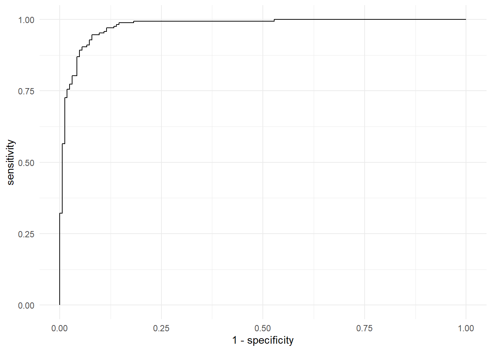
Die geom_path() Funktion verbindet die Punkte in der übergebenen Reihenfolge. Wir können diese Grafik nun beliebig erweitern, um z.B. die Sensitivität und Spezifizität für den Schwellenwert \(q=0.5\) hervorzuheben.
threshold_50 <- lr_roc %>%
filter(.threshold == median(.threshold))
p1 +
annotate(
geom = "point",
x = 1-threshold_50$specificity,
y = threshold_50$sensitivity,
color = "red",
size = 3
)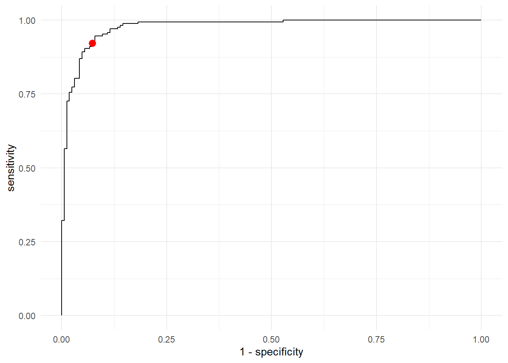
Der Schwellenwert \(q=0.5\) ist wahrscheinlich maximiert wahrscheinlich nicht gleichzeitig die Sensitivität und Spezifizität, weshalb wir diesen optimalen Wert auch berechnen und einzeichnen können. Der Punkt, welcher beide Werte simultan maximiert kann mithilfe des lr_roc Objektes einfach berechnet werden: Indem wir die beiden Spalten specificity und sensitivity aufsummieren und das Maximium dieser Summe berechnen, ermitteln wir den optimalen Schwellenwert.
threshold_opt <- lr_roc %>%
mutate(sssum = sensitivity+specificity) %>%
filter(sssum == max(sssum))
threshold_opt# A tibble: 1 × 4
.threshold specificity sensitivity sssum
<dbl> <dbl> <dbl> <dbl>
1 0.442 0.921 0.946 1.87Da der optimale Schwellenwert \(q=0.442\) beträgt, wollen wir unsere Ergebnisse ensrsprechend anpassen:
lr_metrics_new <- log_fit %>%
augment(data_penguin) %>%
mutate(
.pred_class = if_else(.pred_1 >= threshold_opt$.threshold,"1","0"),
across(c(.pred_class, sex),
~ factor(., levels = c("1", "0")))) %>%
multi_metric(truth = sex,
estimate = .pred_class)Wir können dann die Ergebnisse auf Basis dieses neuen Schwellenwerts mit den Ergebnissen auf Basis des alten Schwellenwerts grafisch vergleichen:
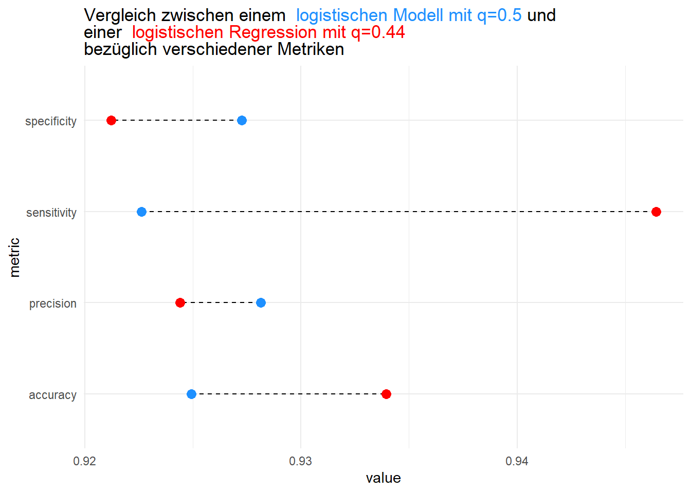
Der Grafik können wir entnehmen, dass durch das Anpassen des Schwellenwerts zwar die Sensitivität stark gestiegen ist, allerdings die Spezifizität leicht gesunken ist. Ebenso hat sich die Accuracy verbessert, aber die Präzision leicht verschlechtert.
6.6.2 Klassifikationsbäume
Das Fitten von Klassifikationsbäumen im {tidymodels} Framework funktioniert analog zum Fitten von Regressionsbäumen. Lediglich das Argument mode muss auf "classification" statt "regression" gestetzt werden.
Wir trainieren zuerst einen Baum ohne die Hyperparameter gesondert zu spezifizieren:
tree_spec_vanilla <- decision_tree(mode = "classification")
tree_fit_vanilla <- tree_spec_vanilla %>% fit(
formula = sex~.,
data = data_penguin
)Das Trainierte Baummodell können wir dann wider mithilfe der fancyRpartplot() Funktion darstellen:
tree_fit_vanilla %>%
extract_fit_engine() %>%
rattle::fancyRpartPlot(caption = "")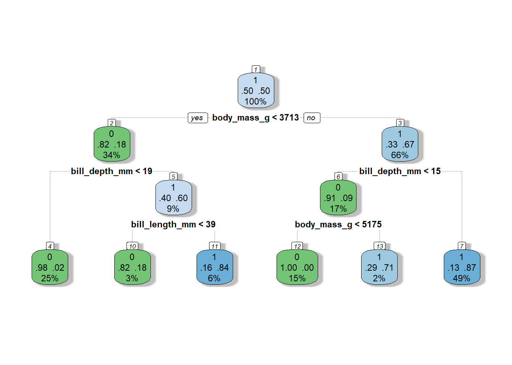
Die Knoten des dargestellten Baums sehen etwas anders aus im Vergleich zu einem Regressionsbaum: Zwar stehen der Vorhersagewert (\(0\) bzw. \(1\)) und die relative Anzahl der Sample im Knoten weiterhin im Knoten, allerdings wird jetzt auch noch zusätzlich die Impurity angezeigt. Die Terme in der Mitte der Knoten geben an wie groß der Anteil der jeweiligen Klassen in den verschiednen Knoten sind. So sind zum Beipiel im Knoten mit der ID 4 (linker unterer Blattknoten) \(98\%\) der Samples im Knoten aus der Klasse \(0\) und nur \(2\%\) aus der Klasse \(1\). Umso ausgeglichener diese beiden Werte sind, desto weniger rein ist der Knoten.
Um eine noch bessere Performance zu erzielen, sollten die Hyperparameter min_n, tree_depth und cost_complexity angepasst werden. Für den folgenden Baum setzen wir deshalb die Baumtiefe auf 13, die Mindestanzahl der Samples in einem Knoten benötigt für einen weiteren Split auf 3 und den Cost-Complexity Parameter auf 3.67*10^-7.
tree_spec <- decision_tree(mode = "classification",
tree_depth = 13,
min_n = 3,
cost_complexity = 3.67e-7)
tree_fit <- tree_spec %>% fit(
formula = sex~.,
data = data_penguin
)Für den resultierenden Baum ergeben sich dann die Metriken
tree_metrics <- tree_fit %>%
augment(data_penguin) %>%
mutate(across(c(.pred_class, sex), ~ factor(., levels = c("1", "0")))) %>%
multi_metric(truth = sex,
estimate = .pred_class)
tree_metrics# A tibble: 4 × 3
.metric .estimator .estimate
<chr> <chr> <dbl>
1 accuracy binary 0.988
2 sensitivity binary 0.994
3 specificity binary 0.982
4 precision binary 0.982Wir können diese Metriken grafisch mit denen der logistischen Regression vergleichen:
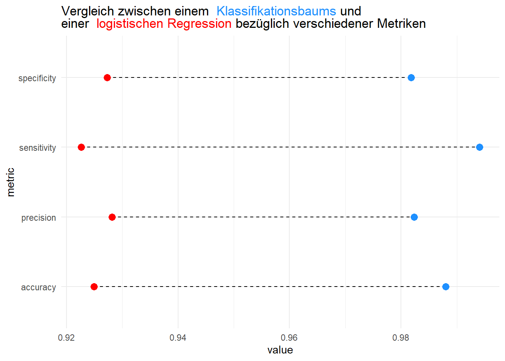
Der Klassifikationsbaum eignet sich also entsprechend der Metriken besser für die Vorhersage des Geschlechts eines Pinguins.
6.6.3 Neuronale Netze
Bevor wir ein Neuronales Netz trainieren können müssen wir die numerischen Feature wieder normalisieren und nominalen Feature in Dummy Variablen umwanderln. Hierfür verwenden wir wieder die dummy_cols() Funktion. Damit wir aber nicht die Zielvariable "sex" in eine Dummy Variable umwandeln, spezifizieren wir in dem Argument select_columns der Funktion dass nur "island" und "spezies" umgewandelt werden sollen. Zusätzlich spezifizieren wir wieder in der mutate_at() Funktion, dass außer der Zielvariable "sex" alle weiteren Variablen normalisiert werden sollen.
library(fastDummies)
data_penguin_transformed <- data_penguin %>%
na.omit()%>%
dummy_cols(select_columns = c("island","species")) %>%
select(-c(species,island))%>%
mutate_at(vars(-"sex"),scale)Die Spezifikation eines Neuronalen Netz Klassifizierers funktioniert dann analog wie im Regressionsfall. Nur das Argument mode muss auf "classification" gesetzt werden, damit die Fehlerfunktion entsprechend angepasst wird.
nnet_spec <- mlp(epochs = 100,
hidden_units = c(64,16),
learn_rate = 0.075,
activation = c("relu","relu"),
mode = "classification"
) %>%
set_engine(engine = "brulee",
verbose = FALSE,
optimizer = "SGD",
stop_iter = 15
) Das Fitten der Modellparameter funktioniert ebenso analog mithilfe der fit Funktion:
set.seed(123)
nnet_res <- nnet_spec %>%
fit(data = data_penguin_transformed,
formula = sex ~.
)Nach dem Fitten können wir dann das geschätzte Modell wieder anhand unseres multi_metric Objekts evaluieren:
nnet_res %>%
augment(data_penguin_transformed) %>%
mutate(across(c(.pred_class, sex), ~ factor(., levels = c("1", "0")))) %>%
multi_metric(truth = sex,
estimate = .pred_class)# A tibble: 4 × 3
.metric .estimator .estimate
<chr> <chr> <dbl>
1 accuracy binary 0.919
2 sensitivity binary 0.929
3 specificity binary 0.909
4 precision binary 0.912Die Ergebnisse des Neuronalen Netzes sind etwas schlechter als die des Klassifikationsbaumes, wobei man bei diesem Vergleich auch vorsichtig sein muss, da man hier die Performance auf den Trainingsdaten vergleich. Da der Penguins Datensatz allerdings nur 344 Sample umfasst, kann es sein, dass die Datenmenge für das erfolgreiche Trainieren eines Neuronalen Netz Klassifizierer zu klein ist.
6.7 Übungsaufgaben
Aufgabe 6.1
Im Kontext der logistischen Regression ist die Wahrscheinlichkeit, dass ein Datenpunkt zur Klasse \(1\) gehört definiert als \[\begin{equation*} \mathbb{P}(Y=1|X=x) = \frac{1}{1+\exp\left(-(b_0+\sum_{j=1}^J b_j x_j)\right)} \end{equation*}\] Zeige nun , dass \[\begin{equation*} \mathbb{P}(Y=0|X=x) = \frac{\exp\left(-\left(b_0+\sum_{j=1}^J b_j x_j\right)\right)}{1+\exp\left(-\left(b_0+\sum_{j=1}^J b_j x_j\right)\right)} \end{equation*}\]
In Section 6.3.2 haben wir in Gleichung \(\eqref{eq:odds}\) die Odds definiert. Zeige, dass der Quotient der Wahrscheinlichkeiten tatsächlich \(\exp(b_0+\sum_{j=1}^J b_jx_j)\) ergibt.
Aufgabe 6.2 Gegeben sei folgende Confusion Matrix:
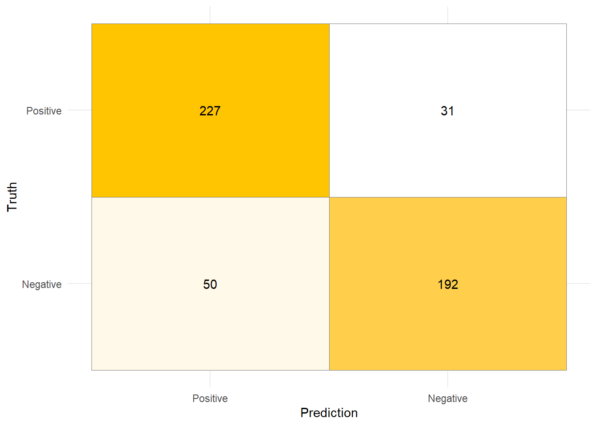
Berechne für diese Confusion Matrix die Metriken
- Accuracy
- Sensitivität
- Spezifizität
- Precision
Runde die Ergebnisse auf drei Nachkommastellen.
Für die folgenden Aufgaben wollen wir ein Datensatz untersuchen, welcher anonymisierte Patientendaten von \(300\) Personen enthält. Der Datensatz Heart Disease Prediction Dataset kann auf der Plattform Kaggle, oder über diesen Link2 heruntergeladen werden.
Der Datensatz enthält folgende Variablen:
| Variable | Beschreibung | Ausprägung |
|---|---|---|
| age | Alter des Patienten (in Jahren) | Zahl |
| sex | Geschlecht des Patienten | 1 = männlich, 0 = weiblich |
| cp | Typ der Brustschmerzen | 1–4 |
| trestbps | Blutdruck in Ruhe bei Aufnahme ins Krankenhaus (in mm Hg) | Zahl |
| chol | Serum-Cholesterin in mg/dl | Zahl |
| fbs | Nüchternblutzucker > 120 mg/dl | 1 = ja, 0 = nein |
| restecg | Ruhe-EKG-Ergebnisse | 0–2 |
| thalach | Maximale erreichte Herzfrequenz | Zahl |
| exang | Belastungsinduzierte Angina | 1 = ja, 0 = nein |
| oldpeak | ST-Streckensenkung durch Belastung im Vergleich zur Ruhe | Zahl |
Zusätzlich enthält der Datensatz noch die Variable target, welche beschreibt, ob eine Person an einer Herzkrankheit leidet. Die Variable target hat die Ausprägungen 1 und 0, wobei 1 für ein positives Testergebnis bzw. Krankheitsbild steht und 0 für ein negatives.3
Aufgabe 6.3
Lese den Datensatz ein und wandle die Zielvarioble
targetin eine Faktorvariable um.Finde heraus, wie viele Patienten mit bzw. ohne Herzkrankheit im Datensatz vorhanden sind. Ist der Datensatz balanciert?
Sind in dem gegebenen Datensatz mehr Männer oder Frauen von der Herzkrankheit betroffen? Betrachte nicht nur die absolute Anzahl, sondern auch die relative Anzahl in den beiden Geschlechtsgruppen.
Erstelle jeweils einen Boxplot für das Alter jener Personen welche erkrankt, bzw. nicht erkankt sind. Lässt sich ein Zusammenhang zwischen dem Alter der Personen und der Krankheit anhand der Boxplots erkennen?
Aufgabe 6.4 In dieser Übung wollen wir ein logistisches Regressionsmodell schätzen, die geschätzten Parameter untersuchen und verschiedene Metriken auf Test Daten berechnen.
Teile den Datensatz in Trainings- und Testdaten ein. Verwende das Seed
123und die Defaultparameter derinitial_splitFunktion bezüglich des Anteils der Trainings- und Testaden.Schätze ein logistisches Regressionmodell auf Basis der Trainingsdaten.
Erstelle eine Summary des geschätzeten Modells und beurteile, welche Variablen statistisch signifikant sind zum Mindestniveau \(\alpha = 0.1\).
Angenommen die Variable
cperhöht sich um eine Einheit, während alle anderen Variablen gleich bleiben. Wie wirkt sich das auf die Odds aus?
Nun wollen wir das Modell auf den Testdaten evaluieren.
Erstelle eine Confusion Matrix wie in Abschnitt Section 6.2.1 auf Basis der Testdaten.
Verwende das
multi_metricObjekt aus Section 6.6.1 um eine übersicht der verschiedenen Metriken zu erstellen.Hat das Modell größere Schwierigkeiten Personen als krank zu identifizieren, welche tatsächlich krank sind, oder Personen als nicht-erkrankt zu identifizieren, welche tatsächlich nicht krank sind?
Aufgabe 6.5
Trainiere nun einen Klassifikationsbaum mit folgenden Parametern auf den Trainingsdaten.
cost_complexity = 6.43e-4,tree_depth = 14,min_n = 12
Berechne nun die gleichen Metriken wie in Teilaufgabe 3. ii. aus Aufgabe 6.4 auf Basis der Testdaten.
Welches der beiden Modelle (logistische Regression vs. Entscheidungsbaum) eignet sich in diesem Kontext besser um eine Erkrankung vorherzusagen?
Da beim Erstellen der Vorhersagen der Schwellenwert \(q = 0.5\) verwendet wurde, sollen wir in dieser Teilaufgabe die ROC Kurve untersuchen.
Erstelle eine ROC-Kurve auf Basis der Testdaten wie in Section 6.6.1.
Warum sind in der dargestellten ROC Kurve nur sehr wenige Spezifizitäts und Sensitivitäts Kombinationen dargestellt?
Bestimme anhand der folgenden Tabelle den optimalen Schwellenwert \(q\) (welcher simultan die Spezifizität und Sensitivität maximiert) und stelle diesen in der ROC-Kurve der vorherigen Teilaufgabe dar.
.threshold specificity sensitivity −Inf 0.000 1.000 0.082 0.000 1.000 0.143 0.429 0.951 0.235 0.457 0.951 0.417 0.543 0.927 0.686 0.571 0.854 0.892 0.657 0.610 0.917 0.943 0.024 Inf 1.000 0.000 Ist der optimale Schwellenwert größer oder kleiner als \(0.5\)?
6.8 Lösungen
Solution 6.1 (Aufgabe 6.1).
Gegeben ist die Wahrscheinlichkeit für die Klasse \(1\) in einem logistischen Regressionsmodell: \[\begin{equation*} \mathbb{P}(Y=1|X=x) = \frac{1}{1+\exp\left(-(b_0+\sum_{j=1}^J b_j x_j)\right)} \end{equation*}\] Da es sich um ein binäres Klassifikationsproblem handelt, gilt: \[\begin{equation*} \mathbb{P}(Y=0|X=x) = 1 - \mathbb{P}(Y=1|X=x) \end{equation*}\] Setze die gegebene Formel ein: \[\begin{align*} \mathbb{P}(Y=0|X=x) &= 1 - \frac{1}{1 + \exp\left(-(b_0 + \sum_{j=1}^J b_j x_j)\right)} \\ &= \frac{\left(1 + \exp\left(-(b_0 + \sum_{j=1}^J b_j x_j)\right)\right) - 1}{1 + \exp\left(-(b_0 + \sum_{j=1}^J b_j x_j)\right)} \\ &= \frac{\exp\left(-(b_0 + \sum_{j=1}^J b_j x_j)\right)}{1 + \exp\left(-(b_0 + \sum_{j=1}^J b_j x_j)\right)} \end{align*}\]
Es gilt: \[\begin{align*} \frac{\mathbb{P}(Y=1|X=x)}{\mathbb{P}(Y=0|X=x)} &= \frac{ \dfrac{1}{1 + \exp\left(-(b_0 + \sum_{j=1}^J b_j x_j)\right)} }{ \dfrac{\exp\left(-\left(b_0 + \sum_{j=1}^J b_j x_j\right)\right)}{1 + \exp\left(-\left(b_0 + \sum_{j=1}^J b_j x_j\right)\right)} } \\ &= \frac{1 + \exp\left(-\left(b_0 + \sum_{j=1}^J b_j x_j\right)\right)}{\exp\left(-\left(b_0 + \sum_{j=1}^J b_j x_j\right)\right)} \cdot \frac{1}{1 + \exp\left(-(b_0 + \sum_{j=1}^J b_j x_j)\right)} \\ &= \frac{1}{\exp\left(-(b_0 + \sum_{j=1}^J b_j x_j)\right)} \\ &= \exp\left(b_0 + \sum_{j=1}^J b_j x_j\right) \end{align*}\]
Solution 6.2 (Aufgabe 6.2).
| Metrik | Wert |
|---|---|
| accuracy | 0.838 |
| sensitivity | 0.880 |
| specificity | 0.793 |
| precision | 0.819 |
Solution 6.3 (Aufgabe 6.3).
-
data_heart <- read.csv(file = "data/heart-disease.csv") %>% mutate(target = factor(target)) -
data_heart %>% group_by(target) %>% summarise(n=n())# A tibble: 2 × 2 target n <fct> <int> 1 0 138 2 1 165In dem Datensatz sind mehr Personen ohne der Krankheit als Personen mit der Krankheit.
-
data_heart %>% group_by(sex,target) %>% summarise(n=n())# A tibble: 4 × 3 # Groups: sex [2] sex target n <int> <fct> <int> 1 0 0 24 2 0 1 72 3 1 0 114 4 1 1 93Im Datensatz leiden \(93\) Männer an der Herzkrankheit, während bei den Frauen nur \(72\) Personen an der Krankheit leiden.
Um die relativen Anteile zu bestimmen, müssen wir die obige Syntax etwas anpassen. In der
summarise()Funktion können wir mithilfe des.groups = "drop_last"Arguments die Gruppierung bezüglich der Variabletargetauflösen (da diese die letzte Gruppe ist). Der Summary Datensatz enthält nach dieser Operation also nur noch die Gruppe bezüglich der Variablesex. Wenn wir dann auf diesen Datensatz diemutate()Funktion anwenden, dann werden die in dermutate()spezifizierten Funktionen Gruppenweise angewendet.data_heart %>% group_by(sex, target) %>% summarise(n = n(), .groups = "drop_last") %>% mutate(freq = n / sum(n))# A tibble: 4 × 4 # Groups: sex [2] sex target n freq <int> <fct> <int> <dbl> 1 0 0 24 0.25 2 0 1 72 0.75 3 1 0 114 0.551 4 1 1 93 0.449Obwohl also absolut gesehen die Anzahl der erkrankten Personen in der Gruppe der Männer größer ist, (\(93\) vs. \(72\)) ist der relative Anteil unter den Frauen viel höher (\(75\%\) vs. \(44.9\%\)).
-
data_heart %>% ggplot(aes(x=target,y=age))+ geom_boxplot()+ theme_minimal()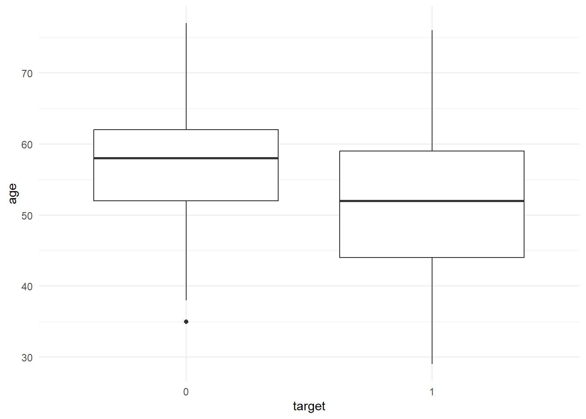
Der Altersmedian in der Gruppe der erkankten Person ist niedriger als in der Gruppe der Personen welche nicht an der Krankheit leiden. Auch die anderen beiden Quartile der Gruppe der erkrankten Personen sind im gegebenen Datensatz niedriger als die der Gruppe der nicht erkrankten Personen. Man könnte also vermuten, dass die Krankheit vermehrt bei jüngern Leuten auftritt.
Solution 6.4 (Aufgabe 6.4).
-
set.seed(123) split_heart <- initial_split(data_heart) data_train <- training(split_heart) data_test <- testing(split_heart) -
log_spec <- logistic_reg() log_fit <- log_spec %>% fit(data = data_train, formula = target ~.) -
log_fit %>% extract_fit_engine() %>% summary()Call: stats::glm(formula = target ~ ., family = stats::binomial, data = data) Deviance Residuals: Min 1Q Median 3Q Max -2.3143 -0.3945 0.1470 0.5640 2.5546 Coefficients: Estimate Std. Error z value Pr(>|z|) (Intercept) 4.870921 2.965683 1.642 0.100501 age -0.013524 0.027092 -0.499 0.617656 sex -1.517896 0.551637 -2.752 0.005930 ** cp 0.800679 0.205740 3.892 9.95e-05 *** trestbps -0.024524 0.011616 -2.111 0.034745 * chol -0.002865 0.004507 -0.636 0.525027 fbs 0.092637 0.595299 0.156 0.876337 restecg 0.743640 0.416802 1.784 0.074398 . thalach 0.025976 0.012428 2.090 0.036603 * exang -1.178701 0.478019 -2.466 0.013671 * oldpeak -0.719277 0.252574 -2.848 0.004402 ** slope 0.219195 0.429168 0.511 0.609530 ca -0.623691 0.214508 -2.908 0.003643 ** thal -1.187637 0.354814 -3.347 0.000816 *** --- Signif. codes: 0 '***' 0.001 '**' 0.01 '*' 0.05 '.' 0.1 ' ' 1 (Dispersion parameter for binomial family taken to be 1) Null deviance: 312.74 on 226 degrees of freedom Residual deviance: 155.52 on 213 degrees of freedom AIC: 183.52 Number of Fisher Scoring iterations: 6Lediglich die Variablen
age,chol,fbsundslopesind nicht zu einem Singifikanzniveau \(\alpha<0.1\) statistisch signifikant. -
Es gilt \(\hat{b}_{\verb|cp|} \approx 0.801\) und deshalb \(\exp(\hat{b}_{\verb|cp|}) \approx 2.43\). Die Odds steigen also um \(2.43\).
-
-
log_fit %>% augment(data_test) %>% select(c(.pred_class,target))%>% mutate(across(c(.pred_class, target), ~ factor(., levels = c("1", "0"))))%>% table()target .pred_class 1 0 1 37 10 0 4 25 -
log_fit %>% augment(data_test) %>% mutate(across(c(.pred_class, target), ~ factor(., levels = c("1", "0")))) %>% multi_metric(truth = target, estimate = .pred_class)# A tibble: 4 × 3 .metric .estimator .estimate <chr> <chr> <dbl> 1 accuracy binary 0.816 2 sensitivity binary 0.902 3 specificity binary 0.714 4 precision binary 0.787 - Da Sensitivität \(>\) Spezifizität ist das Modell besser darin die True Positives korrekt zu erkennen. In einem Medizinischen Kontext ist das wünschenswert, da so weniger tatsächlich erkrankte Personen als nicht erkrankt identifiziert werden.
-
Solution 6.5 (Aufgabe 6.5).
-
tree_spec <- decision_tree(mode = "classification", cost_complexity = 6.43e-4, tree_depth = 14, min_n = 22 ) tree_res <- tree_spec %>% fit(data = data_train, formula = target~.) -
tree_res %>% augment(data_test) %>% mutate(across(c(.pred_class, target), ~ factor(., levels = c("1", "0")))) %>% multi_metric(truth = target, estimate = .pred_class)# A tibble: 4 × 3 .metric .estimator .estimate <chr> <chr> <dbl> 1 accuracy binary 0.724 2 sensitivity binary 0.854 3 specificity binary 0.571 4 precision binary 0.7 - Das logistische Regressionsmodell eigenet sich besser, da alle Metriken auf den Testdaten besser sind als die des Klassifikationsbaums.
-
-
tree_roc <- tree_res %>% augment(data_test) %>% mutate(across(c(.pred_class, target), ~ factor(., levels = c("1", "0")))) %>% roc_curve(.pred_1,truth = target) p1 <- tree_roc %>% ggplot(aes(x=1-specificity,y=sensitivity))+ geom_path()+ theme_minimal() p1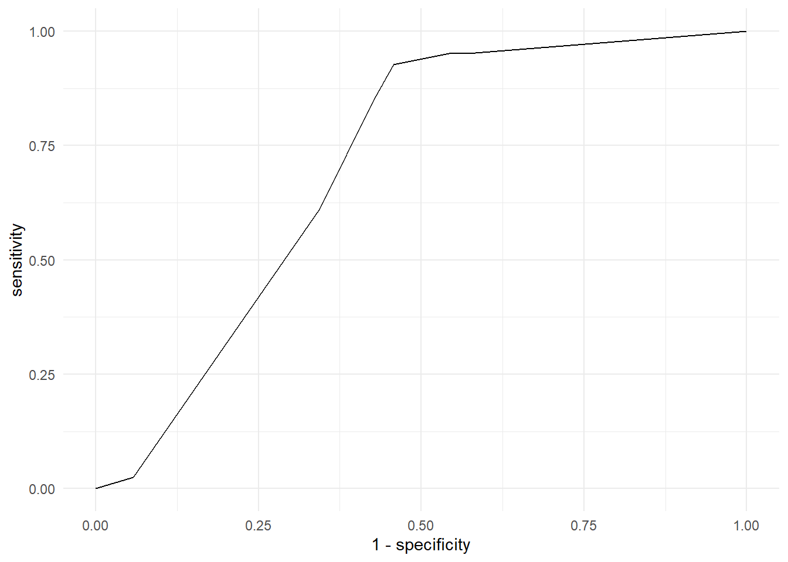
In der ROC-Kurve sind nur wenige Kombinationen dargestellt, da der trainierte Baum nur wenige Schätzwerte für die Wahrscheinlichkeiten enthält. Die Anzahl der Schätzwerte ist durch die Anzahl der Blattknoten gegeben. Im Vergleich zur logistischen Regression ergeben sich also eine geringere Anzahl an Schwellenwerten die zu einer Veränderung der Spezifizität und Sensitivität führen.
Den optimalen Schwellenwert kann man ermitteln indem man die Summe von Spezifizität und Sensitivität betrachtet. Beim größten Summenwert kann dann der entsprechende Schwellenwert abgelesen werden. Dieser maximale Summenwert ist durch \(1.47\) gegeben, was dem Schwellenwert \(q=0.417\) entspricht.
p1 + annotate( geom = "point", x = 1-0.543, y = 0.927, color = "red", size = 3 )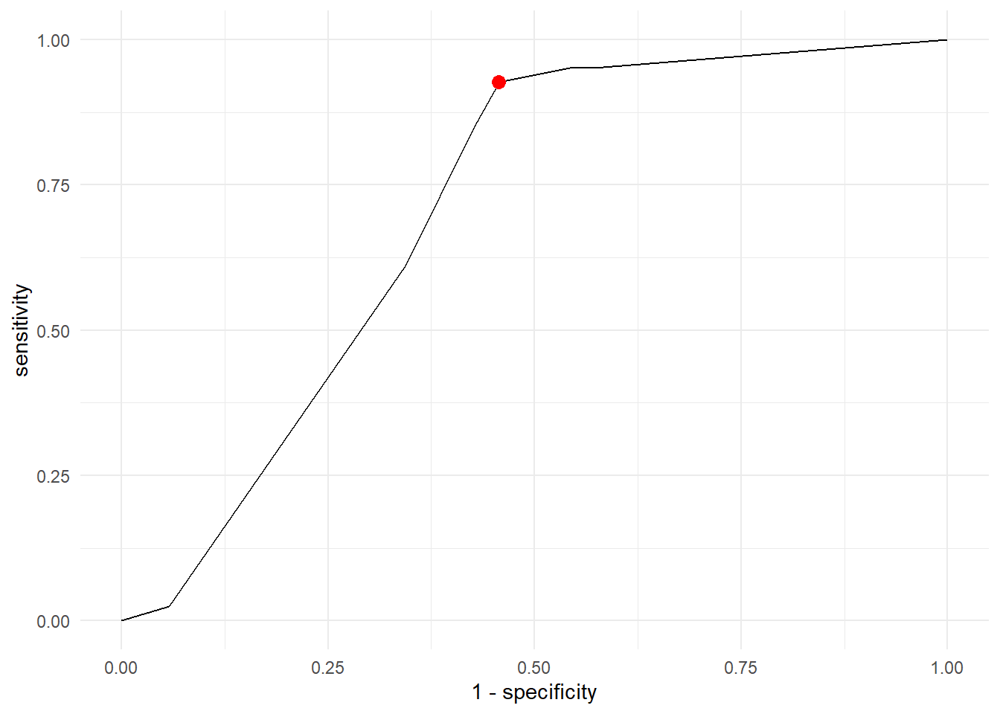
Ist der optimale Schwellenwert größer oder kleiner als \(0.5\)?
Der optimale Schwellenwert \(q_{\verb|opt|}=0.417\) ist kleiner als \(0.5\).
-